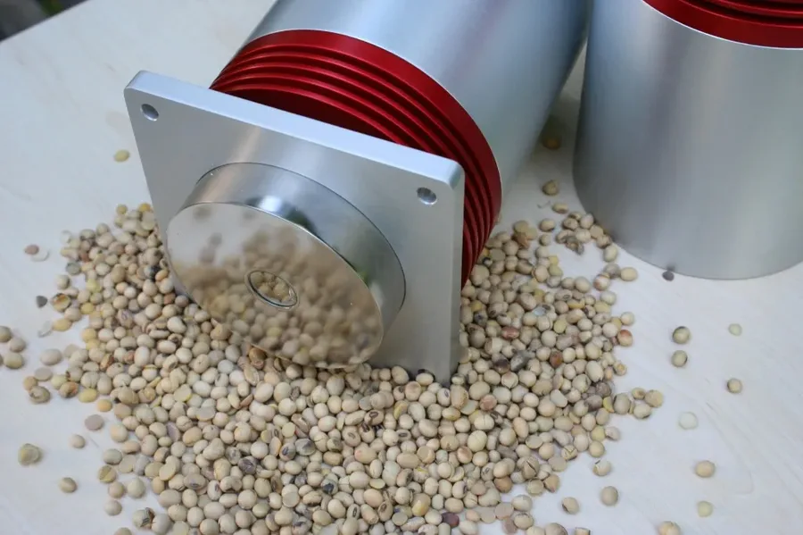
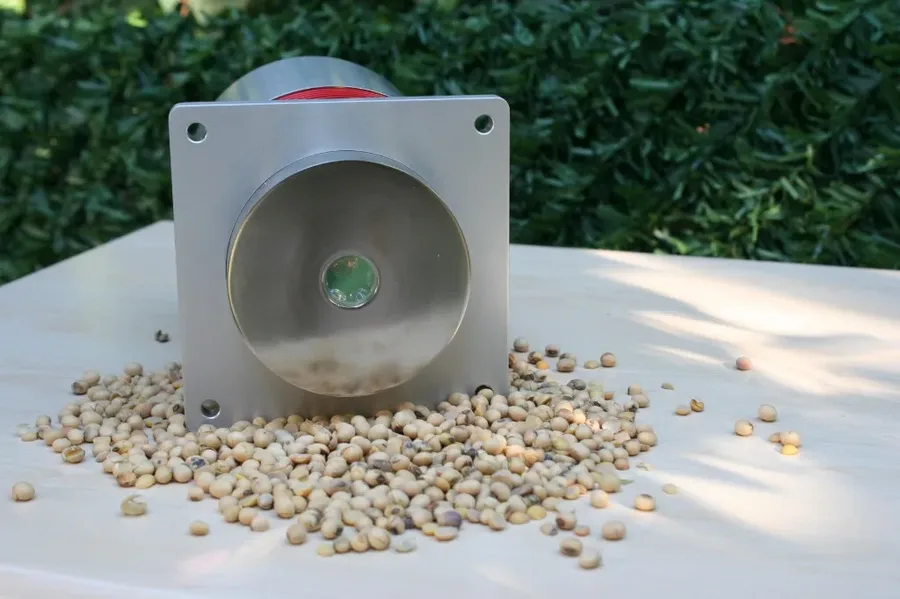
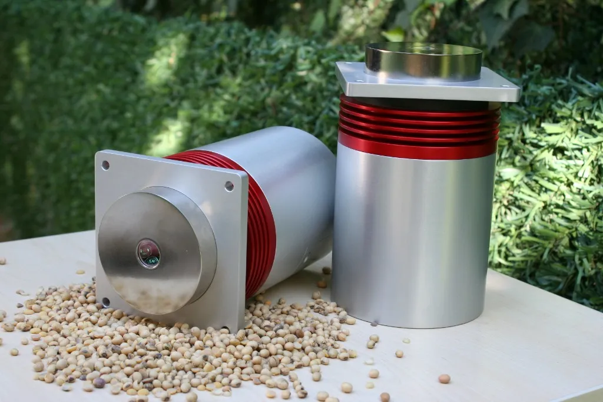
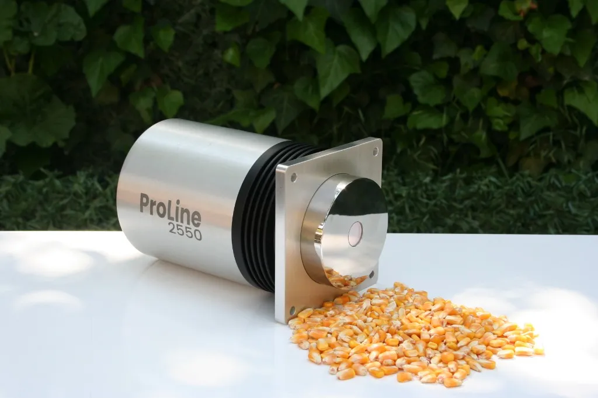

ProLine2550 FT-NIR-Analysator
Der ProLine2550 ist die Flaggschiff-Plattform für Inline-FT-NIR-Analysatoren von USTECH, die in zwei Konfigurationen erhältlich ist, um Ihrer Prozesskomplexität und Ihrem Budget gerecht zu werden. Beide Modelle teilen sich das gleiche robuste Industriedesign, ein IP65-zertifiziertes Gehäuse und die CE-Zertifizierung – unterscheiden sich jedoch in Analysetiefe und Automatisierungsfunktionen.
ProLine2550 Advanced
Entwickelt für die Großserien-Schüttgutproduktion, hebt das Advanced-Modell die Echtzeit-Prozesskontrolle auf ein neues Niveau, indem es umfassende Multiparameter-Analysen gleichzeitig durchführt. Es lässt sich nahtlos in zentrale Übergabepunkte integrieren, um sekundenschnelle Messungen für anspruchsvolle Materialien wie Pulver, Granulate, Pellets und Pasten zu liefern – und alle kritischen Bestandteile auf einmal zu erfassen.
Dieses Hochleistungssystem bietet vollständige Automatisierung mit integrierter Temperaturregelung und IP65-zertifiziertem Schutz, was ununterbrochene Präzision in rauen Umgebungen gewährleistet. Durch die Bereitstellung vollständiger Echtzeitdaten zu mehreren Parametern ermöglicht der ProLine2550 Advanced sofortige Prozessanpassungen – maximiert die Ausbeute, garantiert Produktkonsistenz und eliminiert kostspielige Nacharbeiten.
ProLine2550 Essential
Konzipiert für eine unkomplizierte und kosteneffiziente Prozessüberwachung, liefert das Essential-Modell präzise Echtzeitmessungen für Betriebe mit fokussierten analytischen Anforderungen. Es eliminiert unnötigen Datenballast durch eine maßgeschneiderte Konfiguration zur Erfassung von bis zu zwei Schlüsselparametern, die speziell auf Ihre Produktionsanforderungen abgestimmt sind.
In einem robusten Industriegehäuse mit IP65-Schutzart, CE-Zertifizierung und integrierter Temperaturregelung untergebracht, garantiert das Essential-Modell eine stabile und langlebige Leistung in jeder Produktionsumgebung. Durch die Bereitstellung präziser, verwertbarer Daten innerhalb von Sekunden ermöglicht es dem Bedienpersonal, eine gleichbleibende Produktqualität aufrechtzuerhalten, die tägliche Prozesseffizienz zu steigern und angestrebte Produktionsstandards ohne Komplexität zu erreichen.
Vergleich Essential vs. Advanced
Vergleichen Sie Funktionen, Merkmale und Zielanwendungen beider ProLine2550-Modelle, um die passende Lösung für Ihre Produktionslinie zu finden.
| Merkmal / Spezifikation | ProLine2550 Essential | ProLine2550 Advanced |
|---|---|---|
| Hauptanwendung | Fokussierte Überwachung von 1–2 Schlüsselparametern | Gleichzeitige Multiparameter-Zusammensetzungsanalyse |
| Parameter | Bis zu 2 (z. B. Feuchtigkeit + Protein) | Unbegrenzt (Feuchtigkeit, Fett, Protein, Stärke, Faser etc.) |
| Zielmaterialien | Standardflüssigkeiten, Suspensionen, einfache Feststoffströme | Komplexe Schüttgüter (Pulver, Granulate, Pellets, Pasten) |
| Gehäuse & Schutzart | IP65-Gehäuse in Industriequalität | 316L-Edelstahl, elektropoliert (IP65 / IP69K) |
| Installationsschnittstelle | Flanschmontage für Flachrutschen | Hygienische Einschweißsonden für Rohre, Rutschen, Förderbänder |
| Temperaturregelung | Integrierte Temperaturregelung | Erweiterte aktive Temperaturregelung |
| Kalibrierung & Referenz | Manuelle Kalibrierung über ProChem | Automatische Kalibrierung mit interner Wellenlängenreferenz |
| Konnektivität | Modbus TCP, Analog 4–20 mA | OPC UA, Modbus TCP, Analog 4–20 mA, PROFINET |
| Ideal für | Kostenbewusste Betriebe mit fokussierten QC-Anforderungen | Anlagen mit hohem Durchsatz, die eine vollständige Zusammensetzungskontrolle erfordern |
ProChem Software & Edge-Integration
Die ProLine2550-Serie wird durch ProChem angetrieben, unsere proprietäre Desktop-Software und Automatisierungsschnittstelle, die komplexe spektroskopische Daten in verwertbare Prozesseinblicke umwandelt. Durch die nahtlose Verbindung über Ethernet fungiert ProChem als zentrale Leitstelle für Datenmanagement und Anlagenautomatisierung.
- ▶ Erweitertes Datenmanagement: ProChem Desktop bietet eine benutzerfreundliche Oberfläche, um Spektraldaten an einem zentralen Ort anzuzeigen, zu organisieren und zu analysieren.
- ▶ Chemometrische Flexibilität: Unterstützt Materialkonfigurationen mit fortschrittlichen Kalibriermodellen, die in Eigenvector Solo und PLS erstellt wurden, und ermöglicht eine einfache Anpassung an unterschiedliche Materialtypen.
- ▶ Automatisiertes & kontinuierliches Scannen: Verfügt über ein automatisches Scanmodell, das kontinuierliche Messungen ohne manuelle Bedienereingriffe ermöglicht.
- ▶ Flexible Analysen & Export: Ermöglicht tiefgehende Analysen, kategorisiert nach spezifischem Material oder Sensor, mit nahtlosem Datenexport direkt in CSV-Dateien für eine einfache Weitergabe.
- ▶ ProChem Automatisierung (SPS-Verbindung): Verbindet das Gerät über eine robuste HTTP-Schnittstelle über Ethernet nahtlos mit der SPS der Anlage. Produkt- und Methodennamen werden direkt in der Schnittstelle zugeordnet, was einen effizienten Fernbetrieb ermöglicht und Echtzeit-Analysenergebnisse für sofortige Prozesskorrekturen an die SPS zurückmeldet.
Hardware-Architektur
Entwickelt für den störungsfreien Dauerbetrieb in Industrieumgebungen, verfügt der ProLine2550 über erstklassige Hardwarekomponenten, die für maximale optische Empfindlichkeit und mechanische Haltbarkeit ausgelegt sind.
- ▶ High-End FT-NIR-Sensortechnologie: Angetrieben von einem hochentwickelten Kernsensor, der für seinen außergewöhnlich breiten Spektralbereich am oberen Ende des FT-NIR-Spektrums bekannt ist. Dieser erweiterte Bereich verbessert Empfindlichkeit und Präzision erheblich und ermöglicht die genaue Quantifizierung mehrerer Schlüsselparameter in einem einzigen Scan.
- ▶ Erstklassiges Saphirfenster: Ausgestattet mit einem 2,5 mm dicken Saphirfenster, das außergewöhnliche mechanische Beständigkeit gegen Abrieb und raue Prozessbedingungen bietet.
- ▶ Flexible Probenschnittstelle: Verfügt über einen runden Messkopf mit anpassbarer Schnittstelle für eine einfache Montage an Rutschen, Rohren oder Behältern.
- ▶ Industrielle Konnektivität: Ausgestattet mit einem standardmäßigen 24-V-DC-Stromanschluss und zuverlässiger Ethernet-TCP/IP-Konnektivität für eine stabile Stromversorgung und schnelle Datenübertragung in jedem Anlagenaufbau.
Kontinuierliche Prozessoptimierung
Herkömmliche manuelle Laborstichproben verursachen kritische Verzögerungen und liefern retrospektive Daten, was häufig zu Chargen außerhalb der Spezifikation führt. Der ProLine2550 eliminiert diese Einschränkungen, indem er FT-NIR-Genauigkeit in Laborqualität direkt in den aktiven Produktionsstrom bringt. Entwickelt für die kontinuierliche Inline-Messung, liefert er schnelle, zerstörungsfreie Analysen ohne Probenahmeverzögerungen – und ermöglicht dem Bedienpersonal schnellere Prozesskontrolle und deutlich verbesserte Produktkonsistenz.
Unterstützt durch ein robustes optisches Design und außergewöhnliche Messstabilität gewährleistet der ProLine2550 eine zuverlässige Leistung selbst in den anspruchsvollsten Industrieumgebungen. Fortschrittliche Kalibrierungs- und mathematische Übertragungsfähigkeiten stellen sicher, dass proprietäre Vorhersagemodelle effizient standardisiert und über verschiedene Geräteprofile hinweg bereitgestellt werden können, wodurch die langfristige analytische Leistungsfähigkeit gesichert wird.
Wichtigste Werttreiber
- ✓ Echtzeit-Inline-Analyse: Eliminiert Probenahmeverzögerungen und Laboraufbereitung durch schnelle, zerstörungsfreie Messungen direkt in der Produktionslinie.
- ✓ Zuverlässiger Kalibriertransfer: Unterstützt eine effiziente Modellstandardisierung und den Transfer über verschiedene Geräteprofile hinweg mithilfe moderner chemometrischer und softwarebasierter Werkzeuge.
- ✓ Stabilität in Industriequalität: Mit einem robusten optischen Design gebaut, das zuverlässige Leistung und langfristige Messstabilität in anspruchsvollen Umgebungen gewährleistet.
- ✓ Nahtlose Automatisierungsintegration: Ausgestattet für eine vollständig vernetzte Prozessüberwachung mit direkter Integration in Anlagenautomatisierungssysteme und SPS über OPC UA- und Modbus-Kommunikation.
- ✓ Automatische Kalibrierung: Verfügt über automatisierte Kalibrierroutinen, um manuelle Bedienereingriffe zu eliminieren und langfristige Messstabilität zu gewährleisten.
ProLine2550 im Detail
Erkunden Sie Design, Verarbeitungsqualität und Praxiseinsatz des ProLine2550 FT-NIR-Analysators bei verschiedenen Materialarten und Installationsszenarien.




Komplettes versandbereites Kit
Der ProLine2550 FT-NIR-Analysator wird als umfassendes, sofort einsatzbereites Kit in einem robusten Transportkoffer geliefert, komplett ausgestattet mit allen wesentlichen Komponenten und Zubehörteilen für die sofortige industrielle Einrichtung und Kalibrierung.
-
ProLine2550 FT-NIR-Analysator
Die zentrale spektroskopische Analyseeinheit mit integriertem 2,5-mm-Saphirfenster.
-
100-240 V 10,0 A Netzteil
Robustes Universal-AC/DC-Netzteil für stabilen Betrieb.
-
US- & Euro-Netzkabel
Sowohl US- als auch europäische Standard-Netzkabel sind im Lieferumfang enthalten.
-
Kalibrierstandard
Hochwertiges Referenzstandard-Material für eine zuverlässige Gerätekalibrierung.
-
Zentrierwerkzeug
Maßgeschneiderte Zentrierhilfe zur Positionierung des Kalibrierstandards auf dem Fenster.
-
Integrationsteile
Mechanische Flansche, Dichtungen und Montagehalterungen für den Linieneinsatz.
-
Wasserdichte RJ45-Kupplung
IP67-zertifizierter wasserdichter Inline-Stecker für geschirmte Ethernet-Verbindungen.
-
2,5 mm Inbusschlüssel
Spezieller Sechskantschlüssel zum Öffnen der Geräteabdeckung und für Montageeinstellungen.
-
USB-Laufwerk
Vorinstalliert mit ProChem-Software-Installationsdateien, Gerätehandbüchern und Prüfberichten.
Beschleunigen Sie Ihre Qualitäts-Workflows
Entdecken Sie, wie sich unsere Spektroskopietechnologie in Ihren Prozess einfügt. Wählen Sie unten eine Option, um Dokumentationen herunterzuladen, eine Musterdemonstration anzufordern oder sich von unserem Automatisierungsteam beraten zu lassen.